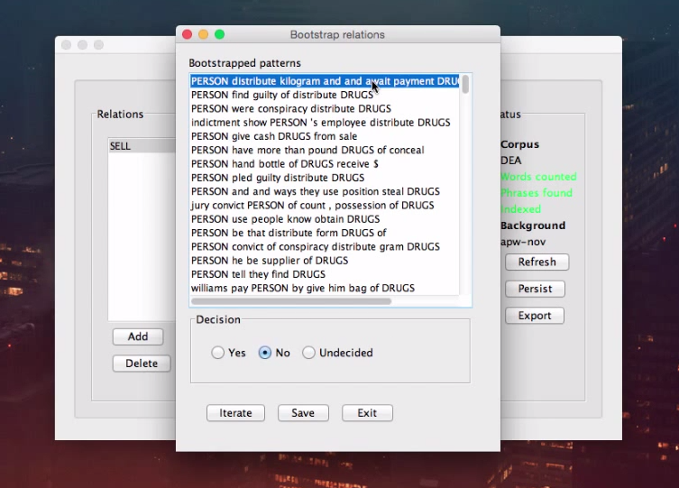
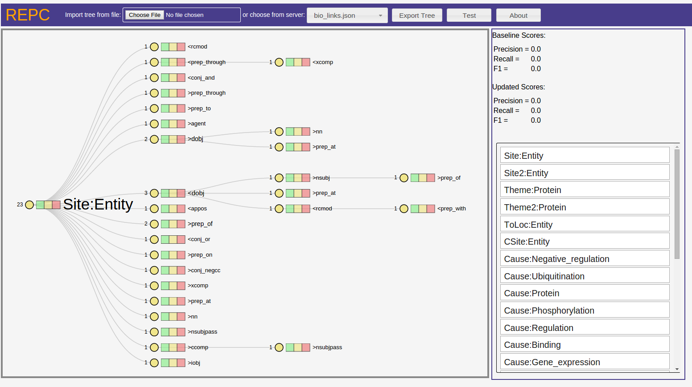

Relationship extraction systems which use dependency path are a very important part of modern NLP. However, there are very few tools visualizing, exploring, and manually tuning the training data used in these system. REPC (Relation Extraction Path Cleaner) hopes to change that by providing an intuitive and easy-to-use front-end for doing so.
As an example, let's look at a relation extraction system that recently came out called ICE. ICE is a very powerful system for automatically identifying and extracting relation information from arbitrary corpuses. It is a very powerful and useful tool. One of the steps in ICE's pipeline is a process of manual tuning of the dependency paths which it uses to identify the relationships. This is the interface for doing so:
In order to label all paths extracted by the system, the user must inspect each path one-at-a-time - a very tedious process. Although ICE is good aat many things, this step is rather painful, and can be greatly improved upon.
REPC attempts to make manual path cleansing a faster, more accurate, and more enjoyable process. REPC represents all of the rules for determining a relationship with a prefix tree. Once the prefix tree is loaded, the user can traverse the tree by expanding + collapsing nodes, and re-rooting the tree. Any node can be marked as positive (green), negative (bad), or yellow (unknown). If a non-leaf node is marked, all of its ancestor nodes will be marked as well.
Each relationship type in the data set are listed in the bottom-right corner. Clicking on one of the relationship types brings up the prefix tree for it in the main viewing window.
After exploring the paths and tagging them appropriately, the user can export the paths to be used with a back-end relationship extraction of their choice.
As you've probably already discovered if you've arrived at this page, REPC is live here.
Documentation on the input file format used by REPC is forthcoming. Until that time, you can use this file for inspiration.
Dr. Mihai Surdeanu had the initial inspiration, and provided much guidance during development. Benjamin Dicken was the primary developer for the web application. This was built as a final project for ISTA 544 (Natural Language Processing) at the University of Arizona.